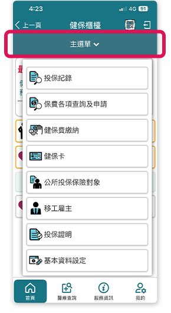
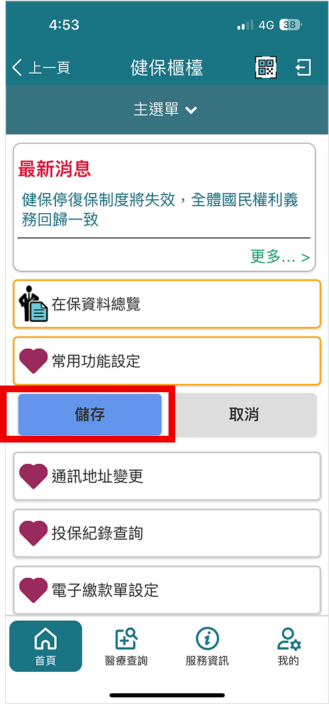

健保櫃檯簡介
「健保櫃檯」為本署健保快易通App提供的承保類服務，提供保險對象可以透過手機查詢與辦理各項健保業務，如辦理健保卡申請、查詢保費、查詢投保紀錄、修改繳款單地址、設定電子繳款單…等。
健保櫃檯在APP上的位置
在健保快易通APP完成個人驗證並成功登入後，於首頁點選「健保櫃檯」即可進入健保櫃檯服務畫面。點擊上方主選單，則可展開服務功能選單。
主選單功能介紹

- 投保紀錄提供個人投保紀錄查詢。包含個人/依附眷屬/雇主投保金額查詢、通訊地址變更等。
- 保費各項查詢及申請提供查詢與管理保費相關事項。包含保費分期申請、電子繳款設定、保費計費明細、以及減免補助與退費相關的申請與查詢等。
- 健保費繳納提供未繳保費線上繳納與查詢。包含保費繳納紀錄、網路繳費明細、繳納證明及轉帳扣款結果通知申請與查詢等。
- 健保卡提供線上健保卡申請作業，亦可由此查詢個人卡號與領卡紀錄。
- 公所投保保險對象提供屬第六類被保險人透過APP辦理加保、轉出與復保申請。
- 投保證明提供個人下載中、英文投保證明。
- 移工雇主提供移工雇主查詢未繳保費、保費繳納紀錄，並提供線上繳費功能。需具有移工雇主的身分才可看到本功能。
- 基本資料設定提供常用資料(地址、電話、email)維護以及行動裝置設定。
常用功能操作指南
設定專屬你的健保櫃檯首頁
利用常用功能設定加入慣用健保服務 打造專屬你的便捷首頁
step1 點擊「常用功能設定」
 step2 挑選常用的功能並點擊愛心圖示，圖示變成實心代表加入成功
step2 挑選常用的功能並點擊愛心圖示，圖示變成實心代表加入成功step3 返回上一頁，即可看見已收藏功能
step4 點擊「常用功能調整順序」，可手動拖拉功能排序
step5 調整完畢後點擊「儲存」，即完成首頁設定